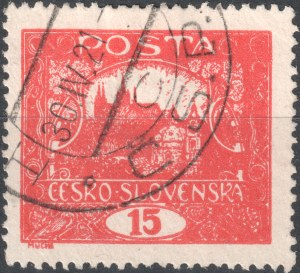
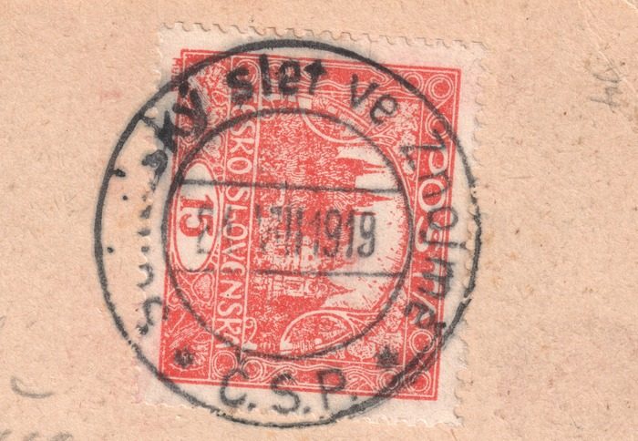
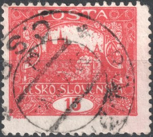
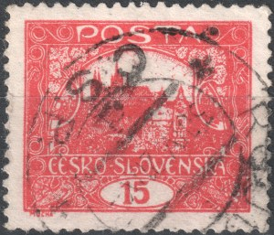
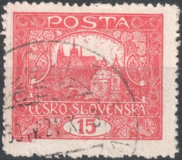

1Postalische Verwendung der 15h
Die Marke zu 15 h deckte die üblichen Gebühren der Jahre 1919–1920 (z. B. eine vierfache Frankatur 4 × 15 h auf einem Brief der IV. Tarifperiode). Die Stempelerfassung nach den selteneren Zähnungen B, C und E zeigt, wo diese Marken tatsächlich verwendet wurden.
Der Wert erschien am 7. Juni 1919 — keinen Monat nach der Tarifänderung vom 15. Mai 1919, mit der die 2. Tarifperiode begann und die Inlands-Postkartengebühr auf genau 15 h angehoben wurde. Die neue Marke konnte damit von Anfang an die häufigste Sendungsart, die Postkarte, mit einer einzigen Marke frankieren. Gedruckt wurde sie von drei ursprünglichen Platten (Platten 1, 2 und 7 — ziegelrot und ihre Farbtöne), später kamen die Platten 3–6 für die Farbtöne Karmin und Zinnober hinzu; die Auflage überstieg 112,5 Millionen Stück, was sie zu einem der meistverwendeten Werte der ganzen Ausgabe macht. Einen allgemeinen Überblick über die Tarife und Postgebühren, die während des Umlaufs der Hradschin-Marken galten, finden Sie auf der Seite der Ausgabe; diese Seite zum Wert 15 h verfolgt seine konkrete postalische Verwendung — Bahnpostämter, Postamtslisten und Sonderstempel.
Bahnpost
Belegte Bahnposten auf Marken zu 15 h der selteneren Zähnungen:
Hinweis: Sämtliche nachstehenden Angaben zur Verwendung – Bahnposten wie auch die Listen der Postämter – beziehen sich ausschließlich auf Marken der Druckplatten 1 und 2.
| Zähnung | Zugnummer | Von | Nach |
|---|---|---|---|
| E | 516 | Brno | Znojmo |
| E | 681 | Prostějov | Česká Třebová |
| E | 47 | Turnov | Praha |
| E | 398 | Ostroměř | Hradec Králové |
| E | Liberec | Pardubice | |
| E | 360 | Smržovka | Josefův Důl |
| E | 384 | Hroby, Radenín | Praha |
| E | 394 | Bratislava | Veselí nad Moravou |
| E | Štíty | Králíky | |
| E | České Budějovice | Planá nad Lužnicí | |
| E | Dobříš | Vrané nad Vltavou | |
| E | Praha | Brno | |
| E | Kaštice | Doupov | |
| B | 352 | Kaštice | Doupov |
| B | 113 | Broumov | Choceň |
| E | Praha | Budějovice * | |
| E | 19x | Jilemnice | Rokytnice nad Jizerou |
| C | 2xx | Vejprty | Chomutov |
| E | 622 | Velké Karlovice | Hranice |
* provisorischer Stempel
Postämter, belegt auf Zähnung B (11¾, Platten 1–2) — 60
- Andělská Hora
- Benešov
- Beroun
- Brandýs nad Labem
- Brno
- Český Krumlov
- Domažlice
- Doubravka
- Heřmanův Městec
- Horní Jindřichov
- Horní Slavkov
- Hostinné
- Chomutov
- Jablonec nad Nisou (2×)
- Jablonné v Podještědí (2×)
- Jáchymov
- Jindřichův Hradec
- Karlovy Vary (2×)
- Klatovy
- Krásná Lípa (4×)
- Kutná Hora
- Liberec
- Loučeň
- Loučeň
- Loučná pod Klínovcem
- Mariánské Lázně
- Mikulášovice
- Mohelnice
- Moravská Ostrava
- Netvořice
- Nový Bor
- Nusle
- Ostrov
- Písek
- Plzeň
- Poděbrady
- Podmokly
- Podmokly
- Pozorka
- Praha (2×)
- Prachatice
- Roudnice nad Labem
- Rumburk
- Schenkenhahn
- Slaný
- Smíchov
- Staré Křečany
- Šluknov (2×)
- Tábor
- Teplice
- Teplice - Šanov
- Ústí nad Orlicí
- Varnsdorf
- Velký Šenov
- Vinohrady (2×)
- Víska
- Vlcice u Trutnova
- Výprachtice
- Železná Ruda
- Žižkov
Postämter, belegt auf Zähnung E (11½:10¾, Platten 1–2) — 161
- Adamov
- Albrechtice v Jizerských horách
- Aš
- Benátky nad Jizerou
- Benešov
- Bílý Kostel nad Nisou (2×)
- Bohatá
- Bohosudov
- Bratislava
- Březno (2×)
- Butovice
- Cítoliby (2×)
- Častolovice
- Červená Řečice
- Česká Kamenice
- Česká Lípa (2×)
- České Budějovice
- Děčín
- Dolany
- Dolné Semerovce
- Dolní Řasnice
- Dolní Vltavice
- Duchcov
- Dvorce
- Dvůr Králové nad Labem
- Ervěnice
- Hejčín - Repčín
- Hlohovec
- Hluboká
- Holešov
- Hoštka
- Hrabětice
- Hranice
- Hustopeče u Brna
- Cheb
- Choceň
- Chomutov
- Chotětov
- Jablonec nad Nisou
- Jaroslavice
- Jemnice
- Jimramov
- Jirkov
- Jiříkov
- Kadaň
- Kardašova Řečice
- Karlovy Vary
- Kařez
- Kladno
- Klatovy
- Kojetice
- Kojetice na Moravě
- Kolín
- Kostelec na Hané
- Kostelec nad Černými lesy (2×)
- Kožlany
- Králíky
- Krásná
- Krč
- Krucemburk
- Kuřivody
- Kuzmice
- Lenora
- Liberec
- Libuň
- Liptovský Mikuláš
- Litoměřice
- Litovel
- Loket
- Loučim
- Louny
- Luby u Chebu
- Malá Morávka (2×)
- Mariánské Radčice
- Mělník
- Mimoň
- Mirotice
- Mladotice
- Mníšek
- Moravské Prusy
- Moravský Svätý Ján
- Most
- Nebočady
- Nitra
- Nový Jičín
- Nusle
- Nýřany
- Olomouc
- Opava
- Osek u Rokycan
- Ostroměř
- Ostrov
- Pardubice
- Peruc
- Piešťany
- Plumlov
- Plzeň
- Pocinovice
- Podbořany
- Podmokly
- Praha
- Prácheň
- Předmostí
- Přelouč
- Příbram
- Přísečnice
- Přívoz
- Račiněves
- Radiměř
- Radonice
- Roudnice nad Labem
- Roudno
- Rybáře
- Rychnov nad Malší
- Řevnice
- Sadská
- Sedlčany
- Schenkenhahn
- Slaný
- Slavičín
- Smíchov
- Staňkov
- Stará Ľubovňa
- Strážnice
- Střezimíř
- Šahy
- Šluknov
- Tatenice
- Tekovské Lužany
- Teplice - Šanov
- Topoľčianky
- Trenčianske Teplice
- Trnovany
- Tuchoměřice
- Turnov
- Uherský Ostroh
- Uničov
- Ústí nad Labem
- Valeč
- Vápenný Podol
- Varnsdorf
- Velemín
- Velká Losenice
- Velký Dřevíč
- Vlasatice
- Vratislavice nad Nisou
- Vrdy
- Vrchlabí
- Vrkoslavice
- Vroutek
- Všetaty
- Výsluní
- Zábřeh
- Zahají
- Zákupy
- Zlaté Hory
- Žarnovica
- Žďár u Doupova
- Žihobce
- Žilina
- Žlutice
Postämter, belegt auf Zähnung C (13¾, Platten 1–2) — 10
- Benešov
- Březno
- Horní Růžodol
- Choceň
- Kadaň (4×)
- Litoměřice
- Praha (2×)
- Praha 1
- Prunéřov
- Soběslav
Postämter, belegt auf den Zähnungen G (11½:13¾) und H (13¾:10¾), Platten 1–2
Zähnung G — 11½:13¾ (7 Stück: Felder 55, 53, 34, 17, 92 aus Platte I; 42, 75 aus Platte II): der Stempel Praha 1 ist auf sechs Marken belegt, lesbare Daten 18. II. 1920, 25. II. 1920, 21. IV. 1920 und IV. 1920 (nur Monat).
Zähnung H — 13¾:10¾ (5 Stück: Paar 97+98/I, ein neu gefundenes Paar und Feld 84/I): lesbare Stempel tragen zwei Belege — Turnov, 15. III. 1920 (waagerechtes Paar, bisher früheste belegte Verwendung der Zähnung H) und Hradec Králové, 27. IV. 1921 (84/I); das Paar 97+98/I trägt maschinelle Wellenlinienabdrucke ohne lesbares Amt.
Geschnittene Marken der Platten 5 und 6 postalisch verwendet — 16
Seltene Belege der postalischen Verwendung geschnittener Marken aus den späten Platten:
- Brezovka — 7. VII. 1920 (Feld 35/VI)
- Košice 2 — 26. VI. 1920 (Feld 29/V)
- Košice 2 — 13. VII. 1920 (Feld 34/VI, Artikel über den Fund)
- Košice 3 — ohne lesbares Datum (Feld 49/V)
- Košice 4 — 1. IX. 1920 (senkrechtes Paar, Feldern 6+16/V)
- Košice — 5. VII. 1920 (Feld 100/VI)
- Lučenec — 2. X. 1920 (Feld 62/VI)
- Malý Lipník — 30. V. 1920 (Feld 77/V)
- Plešivec — 1. VI. 1920 (Feld 47/VI)
- Rimavská Sobota — 7. VI. 1920 (Feld 100/V)
- Rimavská Sobota — ohne lesbares Datum (Feld 1/VI)
- Štitáre — ohne lesbares Datum (Feld 80/VI)
- Amt unlesbar — 24. VII. 1920 (Feld 90/VI)
Weiter befinden sich in der Sammlung zwei geschnittene Stücke mit einem Stempel ohne lesbares Amt und Datum: Feld 36/VI und Feld 57/V.
Der älteste Sonderstempel — das Sokol-Treffen in Znaim, 24.8.1919
Eine von Znaim nach Wagstadt gesendete Postkarte trägt den runden Sonderstempel ŽUPNÍ SLET SOKOLSKÝ VE ZNOJMĚ vom 24. August 1919 — nach dem bisherigen Kenntnisstand die früheste belegte Verwendung eines tschechoslowakischen Sonderstempels auf der Hradschin-Ausgabe. Frankiert ist sie mit einer ungezähnten 15 h (Feld 73/II); ein zweites Stück mit Zähnung A (Feld 57/II) wurde ebenfalls gefunden.

Der letzte Gültigkeitstag — 30. 4. 1921
Die postalische Gültigkeit der Hradschin-Ausgabe endete am 30. April 1921. Marken mit dem Stempel genau dieses Tages sind daher ein interessanter Beleg für das allerletzte Ende ihres Dienstes — und bei der 15 h treffen darin alle drei Hauptzähnungen der späteren Platten zusammen. Die Sammlung enthält vom 30. IV. 1921 bisher vier Stücke: Feld 64/IV in Zähnung A, Felder 99/IV und 46/IV in Zähnung B und Feld 16/V in Zähnung C (Maschinenstempel). Das Postamt ist auf den losen Marken nicht lesbar. Stücke mit Stempeln nach diesem Tag fasst der eigene Artikel unten zusammen.
Feld 64/IV, Zähnung A

2Feld 99/IV, Zähnung B

3Feld 46/IV, Zähnung B

4Feld 16/V, Zähnung C, Maschinenstempel
Stempel mit Datum nach dem Ende der Gültigkeit der Hradschin-Marken
Die postalische Gültigkeit der Hradschin-Ausgabe endete am 30. April 1921, dennoch taucht gelegentlich eine gebrauchte Marke mit späterem Stempeldatum auf. Das erste belegte Stück: ein Viererblock 15 h der Platte VI (Felder 48/49/58/59), Zähnung C, Stempel Č.S.P. mit Datum 13. VI. 21 — wahrscheinlich eine falsch eingestellte Jahreszahl im Stempel. Die Seite wird um weitere Funde ergänzt.